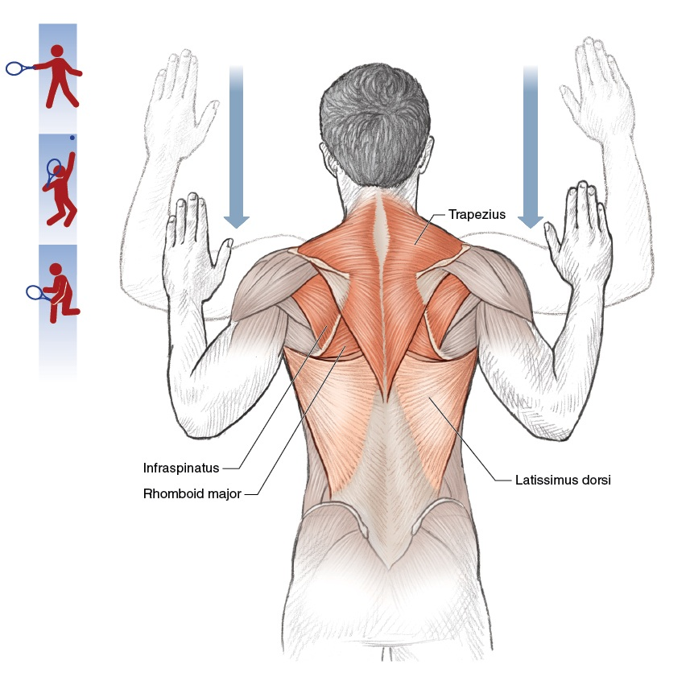
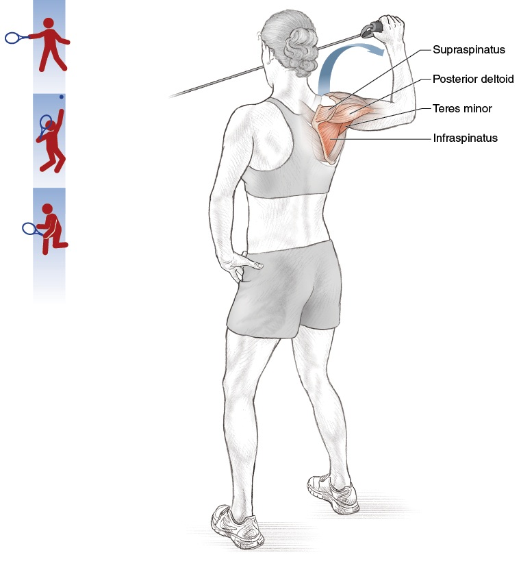

Skeletal Architecture & Connective Tissue — The Bony Levers and Joint Designs of Tennis
Kiến Trúc Xương & Mô Liên Kết — Đòn Bẩy Xương và Thiết Kế Khớp Của Tennis
Deep Dive #5 — The Anatomy & Geometry Project for Tennis Players 3.5 → 4.5
Chuyên Đề Số 5 — Dự Án Giải Phẫu & Hình Học cho Người Chơi Tennis 3.5 → 4.5
Tại sao tôi viết chương này / Why I wrote this
Tôi đã đi khám bác sĩ vì đau vai, và bác sĩ chụp X-quang rồi nói "xương của bạn bình thường". Tôi ra về với một toa thuốc giảm đau và không có câu trả lời thực sự. Một năm sau, tôi mới hiểu vấn đề không phải ở xương — vấn đề ở cách tôi sử dụng xương của mình. Xương của tôi thì bình thường, nhưng tôi không hiểu nó là một hệ thống đòn bẩy. Tôi không hiểu rằng hình dạng ổ khớp vai quyết định góc đánh tối đa của tôi. Tôi không hiểu rằng khung chậu của tôi có hình dạng cụ thể và tôi phải chơi quanh nó, không phải chống lại nó.
Chương này nói về BỘ XƯƠNG bên dưới các cơ. Hình dạng xương quyết định biên khớp của các bạn. Mô liên kết (dây chằng, sụn, fascia) giữ tất cả lại với nhau. Hệ ĐÒN BẨY nhân (hoặc giới hạn) lực của các bạn.
Tại sao điều này quan trọng ở 3.5 → 4.5? Vì bộ xương là RÀNG BUỘC mà các bạn không thể thay đổi. Các bạn không thể dài xương đùi. Các bạn không thể làm sâu hơn ổ cối vai. Các bạn không thể mọc sụn mới. Các bạn có thể làm là LÀM VIỆC VỚI bộ xương các bạn có. Chương này cho các bạn biết chính xác cách nào.
Nguồn tôi đã học từ: tài liệu huấn luyện của Hiệp hội Tennis Canada (tôi đã theo một khóa đào tạo ở Canada năm 2020), sách Tennis Anatomy của Roetert & Kovacs, và những buổi khám với bác sĩ chỉnh hình thể thao ở Surrey. Tôi đã tổng hợp lại những điều đó ở đây.
Table of Contents / Mục Lục
| # |
Chapter |
Chương |
| 1 |
The Skeleton Is a System of Levers |
Bộ Xương Là Hệ Đòn Bẩy |
| 2 |
The Lower-Body Bones — Femur, Tibia, Foot |
Xương Thân Dưới — Đùi, Ống, Bàn Chân |
| 3 |
The Pelvis & Sacrum — The Hidden Foundation |
Khung Chậu & Xương Cùng — Nền Ẩn |
| 4 |
The Spine — The 33-Vertebra Chain |
Cột Sống — Chuỗi 33 Đốt |
| 5 |
The Shoulder Girdle — Clavicle, Scapula, Humerus |
Đai Vai — Đòn, Vai, Cánh Tay |
| 6 |
The Arm & Wrist Bones — Ulna, Radius, Carpals |
Xương Tay & Cổ Tay — Trụ, Quay, Cổ Tay |
| 7 |
Connective Tissue — Ligaments, Cartilage, Fascia |
Mô Liên Kết — Dây Chằng, Sụn, Cân |
| 8 |
Why Bony Anatomy Decides Stroke Limits |
Tại Sao Giải Phẫu Xương Quyết Định Giới Hạn Cú Đánh |
| 📋 |
Skeletal Cheat Sheet |
Bảng Tóm Tắt Xương |
Chapter 1 — The Skeleton Is a System of Levers
Chương 1 — Bộ Xương Là Hệ Đòn Bẩy
| 🇺🇸 English |
🇻🇳 Tiếng Việt |
| Every bone is a lever. A lever is a rigid bar that rotates around a fixed point (called the FULCRUM). Your bones rotate around your joints. |
Mỗi xương là một đòn bẩy. Đòn bẩy là thanh cứng xoay quanh điểm cố định (gọi là ĐIỂM TỰA). Xương bạn xoay quanh khớp bạn. |
| The 3 classes of levers |
3 lớp đòn bẩy |
| Class 1 — Fulcrum in middle (like a seesaw). Example in body: the head resting on the atlas vertebra. The fulcrum is the joint between the skull and the spine. |
Lớp 1 — Điểm tựa ở giữa (như bập bênh). Ví dụ trong cơ thể: đầu nghỉ trên đốt đội. Điểm tựa là khớp giữa sọ và cột sống. |
| Class 2 — Load in middle (like a wheelbarrow). Example in body: standing on tiptoes. The fulcrum is the ball of the foot, the load is your body weight at the ankle, the effort is the calf muscle pulling up. Mechanical advantage > 1 — the muscle force is amplified. |
Lớp 2 — Tải ở giữa (như xe cút kít). Ví dụ trong cơ thể: đứng nhón chân. Điểm tựa là mũi chân, tải là trọng lượng cơ thể ở cổ chân, lực là cơ bắp chân kéo lên. Lợi thế cơ học > 1 — lực cơ được khuếch đại. |
| Class 3 — Effort in middle (like tweezers). Example in body: ALMOST EVERYTHING. The muscle inserts between the joint (fulcrum) and the load (hand). Mechanical advantage < 1 — the muscle force is REDUCED but SPEED is amplified. The arm is a third-class lever. |
Lớp 3 — Lực ở giữa (như nhíp). Ví dụ trong cơ thể: HẦU HẾT MỌI THỨ. Cơ chèn giữa khớp (điểm tựa) và tải (tay). Lợi thế cơ học < 1 — lực cơ bị GIẢM nhưng TỐC ĐỘ được khuếch đại. Tay là đòn bẩy lớp 3. |
| Why this matters — The arm is SLOW at generating force (because it's a Class 3 lever) but FAST at generating racket-head speed (because the muscle contraction is amplified into speed at the hand). This is why the leg muscles (which are closer to the body) are the POWER source — they have better leverage. The arm is the SPEED source. |
Tại sao điều này quan trọng — Tay CHẬM trong việc tạo lực (vì là đòn bẩy Lớp 3) nhưng NHANH trong việc tạo tốc độ đầu vợt (vì co cơ được khuếch đại thành tốc độ ở tay). Đây là lý do cơ chân (gần cơ thể hơn) là nguồn LỰC — chúng có lợi thế cơ học tốt hơn. Tay là nguồn TỐC ĐỘ. |
| The forearm lever ratio — Forearm length (~25 cm) ÷ biceps insertion point (~5 cm from elbow) = 5:1 mechanical disadvantage for force, 5:1 mechanical advantage for speed. |
Tỷ lệ đòn bẩy cẳng tay — Chiều dài cẳng tay (~25 cm) ÷ điểm chèn nhị đầu (~5 cm từ khuỷu) = bất lợi cơ học 5:1 cho lực, lợi thế 5:1 cho tốc độ. |
| Why biceps are "weak" in tennis — The biceps has a 5:1 disadvantage. It needs to produce 5x the force at the hand to hold against a 1x load. Most recreational players "feel" biceps burning after a long match because biceps is trying to do the work of the larger, more efficient muscles. |
Tại sao nhị đầu "yếu" trong tennis — Nhị đầu có bất lợi 5:1. Nó cần tạo lực gấp 5 lần ở tay để giữ chống lại tải 1x. Hầu hết người chơi phong trào "cảm thấy" nhị đầu nóng rát sau trận dài vì nhị đầu đang cố làm việc của các cơ lớn hơn, hiệu quả hơn. |
| The tennis implication — Train the LARGE muscles (legs, hips, core) for power. The arm just translates that power into racket-head speed. A biceps curl will NOT improve your forehand. A squat might. |
Hệ quả tennis — Tập cơ LỚN (chân, hông, lõi) cho sức mạnh. Tay chỉ chuyển lực đó thành tốc độ đầu vợt. Curl nhị đầu sẽ KHÔNG cải thiện forehand bạn. Một squat có thể. |
| Master cue: "Legs are the engine. Arm is the transmission. Racket is the wheels." |
Câu nhắc tổng: "Chân là động cơ. Tay là hộp số. Vợt là bánh xe." |
Chapter 2 — The Lower-Body Bones — Femur, Tibia, Foot
Chương 2 — Xương Thân Dưới — Đùi, Ống, Bàn Chân
| 🇺🇸 English |
🇻🇳 Tiếng Việt |
| The femur (thigh bone) — The longest, strongest bone in the body. ~45–50 cm in adult men, ~40–45 cm in women. Bears all the body weight during standing and most of it during running. The head of the femur sits in the hip socket (acetabulum). |
Xương đùi — Xương dài nhất, mạnh nhất trong cơ thể. ~45–50 cm ở nam trưởng thành, ~40–45 cm ở nữ. Mang toàn bộ trọng lượng cơ thể khi đứng và phần lớn khi chạy. Chỏm xương đùi nằm trong ổ cối hông. |
| The femoral neck angle — The angle between the femoral neck and the femoral shaft is ~125°–135° in adults. This angle, called the angle of inclination, determines how your hip rotates. Coxa vara (angle <120°) limits rotation. Coxa valga (angle >140°) increases rotation but may cause instability. |
Góc cổ đùi — Góc giữa cổ xương đùi và thân xương đùi là ~125°–135° ở người trưởng thành. Góc này, gọi là góc nghiêng, quyết định hông bạn xoay thế nào. Coxa vara (góc <120°) giới hạn xoay. Coxa valga (góc >140°) tăng xoay nhưng có thể gây mất ổn định. |
| The femoral torsion angle — The angle between the femoral neck and the femoral CONDYLES (the bottom knob that meets the knee). Normal is ~10°–15° of ANTEVERSION (forward twist). |
Góc xoắn xương đùi — Góc giữa cổ xương đùi và LỒI CẦU đùi (núm dưới gặp gối). Bình thường là ~10°–15° XOAY TRƯỚC (xoắn tới). |
| Why anteversion matters for tennis — Higher anteversion (~15°–20°) means the knees and feet naturally point INWARD when standing. This makes hip EXTERNAL rotation easier and hip INTERNAL rotation harder. A player with high anteversion may have a "natural" open-stance forehand. |
Tại sao xoay trước quan trọng cho tennis — Xoay trước cao (~15°–20°) nghĩa là gối và chân tự nhiên chỉ VÀO TRONG khi đứng. Điều này làm XOAY NGOÀI hông dễ hơn và XOAY TRONG hông khó hơn. Người chơi xoay trước cao có thể có forehand "tự nhiên" open-stance. |
| The tibia (shin bone) — The second longest bone. Bears most of the body's load below the knee. Has a slight TIBIAL TORSION (~20°–30° of external rotation of the bottom relative to the top). This is why your foot naturally points slightly outward when you stand. |
Xương chày (xương ống) — Xương dài thứ hai. Mang phần lớn tải cơ thể dưới gối. Có XOẮN CHÀY nhẹ (~20°–30° xoay ngoài của đáy so với đỉnh). Đây là lý do chân bạn tự nhiên chỉ hơi ra ngoài khi đứng. |
| The patella (kneecap) — The largest SESAMOID bone (bone embedded in a tendon). Embedded in the quadriceps tendon. Acts as a pulley for the quadriceps, increasing its leverage by ~30%–50%. |
Xương bánh chè — Xương VỪNG lớn nhất (xương chèn trong gân). Chèn trong gân tứ đầu đùi. Hoạt động như ròng rọc cho tứ đầu đùi, tăng lợi thế đòn bẩy ~30%–50%. |
| Why patella matters for tennis — Without the patella, the quadriceps would need to produce ~30% more force to extend the knee. The patella is a force amplifier. It is also why kneecap injuries (patellar tendinitis, "jumper's knee") are common in tennis. |
Tại sao xương bánh chè quan trọng cho tennis — Không có xương bánh chè, tứ đầu đùi cần tạo ~30% lực nhiều hơn để duỗi gối. Xương bánh chè là bộ khuếch đại lực. Đó cũng là lý do chấn thương xương bánh chè (viêm gân xương bánh chè, "đầu gối người nhảy") phổ biến trong tennis. |
| The foot — 26 bones in each foot. That's 26 SMALL levers working together. They form 3 arches: medial longitudinal (inner side), lateral longitudinal (outer side), and transverse (across the ball). |
Bàn chân — 26 xương trong mỗi bàn chân. Đó là 26 ĐÒN BẨY NHỎ làm việc cùng nhau. Chúng tạo 3 cung: dọc trong (bên trong), dọc ngoài (bên ngoài), và ngang (ngang mũi chân). |
| The arches act like a SPRING. When you land on your foot, the arches flatten slightly and store energy. When you push off, the arches rebound and return energy. The foot is a spring, like the Achilles tendon. |
Cung hoạt động như LÒ XO. Khi bạn đáp chân, các cung phẳng nhẹ và tích năng lượng. Khi bạn đẩy đi, các cung bật lại và trả năng lượng. Bàn chân là lò xo, như gân Achilles. |
| Flat feet vs high arches — Flat feet: more flexible, store more energy, but less stable. High arches: less flexible, store less energy, but more stable. The 50+ player with flat feet has more spring but may need orthotics for stability. |
Bàn chân phẳng vs cung cao — Bàn chân phẳng: linh hoạt hơn, tích nhiều năng lượng hơn, nhưng kém ổn định hơn. Cung cao: kém linh hoạt hơn, tích ít năng lượng hơn, nhưng ổn định hơn. Người chơi 50+ chân phẳng có nhiều lò xo hơn nhưng có thể cần orthotic cho ổn định. |
Chapter 3 — The Pelvis & Sacrum — The Hidden Foundation
Chương 3 — Khung Chậu & Xương Cùng — Nền Ẩn
| 🇺🇸 English |
🇻🇳 Tiếng Việt |
| The pelvis is the foundation of the entire upper body. It is also the largest bony structure in the body. Made of 3 bones fused together: ilium (the big wing), ischium (the sitting bone), pubis (the front). |
Khung chậu là nền của toàn bộ thân trên. Nó cũng là cấu trúc xương lớn nhất trong cơ thể. Làm từ 3 xương hợp nhất: cánh chậu (cánh lớn), ngồi (xương ngồi), mu (xương trước). |
| The sacrum — 5 fused vertebrae at the bottom of the spine. Sits between the two iliac bones. The keystone of the pelvis. |
Xương cùng — 5 đốt sống hợp nhất ở đáy cột sống. Nằm giữa hai xương cánh chậu. Đá chốt khóa của khung chậu. |
| The SI joint (sacroiliac joint) — Where the sacrum meets the ilium. A famously stiff joint with only ~2°–4° of motion. But that motion is CRITICAL — it's where the legs transfer force into the spine. An SI joint that doesn't move = no kinetic chain. |
Khớp SI (khớp cùng-chậu) — Nơi xương cùng gặp cánh chậu. Khớp nổi tiếng cứng chỉ có ~2°–4° chuyển động. Nhưng chuyển động đó QUAN TRỌNG — đó là nơi chân truyền lực vào cột sống. Khớp SI không chuyển động = không có chuỗi động lực. |
| Why SI matters for tennis — During a forehand, the lead leg pushes against the ground, force travels UP through the tibia, through the femur, into the hip socket, across the SI joint, into the spine, into the shoulder, into the arm. If the SI joint is locked, the force stops at the hip. |
Tại sao SI quan trọng cho tennis — Trong forehand, chân trước đẩy vào đất, lực đi LÊN qua chày, qua đùi, vào ổ cối hông, ngang khớp SI, vào cột sống, vào vai, vào tay. Nếu khớp SI khóa, lực dừng ở hông. |
| The 50+ SI warning — SI joints become STIFFER with age (collagen cross-links in the ligaments). By age 60, the SI joint may move only ~1°–2°. This is one reason older players lose power — the SI is not transmitting force. |
Cảnh báo SI 50+ — Khớp SI trở nên CỨNG hơn theo tuổi (cross-links collagen trong dây chằng). Đến 60 tuổi, khớp SI có thể chỉ chuyển động ~1°–2°. Đây là một lý do người chơi lớn tuổi mất lực — SI không truyền lực. |
| The SI mobility drill — Standing hip circles (10 each direction), single-leg balance (30 seconds each side), and 90/90 hip rotations (slow, 10 reps) help maintain SI motion. Do this daily for 50+ players. |
Bài tập vận động SI — Vòng hông đứng (10 mỗi hướng), thăng bằng một chân (30 giây mỗi bên), và xoay hông 90/90 (chậm, 10 lần) giúp duy trì chuyển động SI. Làm hàng ngày cho người chơi 50+. |
| The pelvic tilt — The pelvis can tilt forward (anterior tilt, ~10°–15°) or backward (posterior tilt, ~5°–10°). Most tennis players have a slight anterior tilt, which increases hip flexion range (good for low balls) but may stress the lumbar spine. |
Nghiêng khung chậu — Khung chậu có thể nghiêng tới (nghiêng trước, ~10°–15°) hoặc nghiêng lùi (nghiêng sau, ~5°–10°). Hầu hết người chơi tennis có nghiêng trước nhẹ, tăng biên gập hông (tốt cho bóng thấp) nhưng có thể căng cột sống thắt lưng. |
| Master cue: "Free the SI. Free the chain." |
Câu nhắc tổng: "Giải phóng SI. Giải phóng chuỗi." |
Chapter 4 — The Spine — The 33-Vertebra Chain
Chương 4 — Cột Sống — Chuỗi 33 Đốt
| 🇺🇸 English |
🇻🇳 Tiếng Việt |
| The spine is 33 vertebrae stacked. 24 are movable (7 cervical, 12 thoracic, 5 lumbar). 9 are fused (5 sacral, 4 coccygeal). |
Cột sống là 33 đốt xếp chồng. 24 đốt di động (7 cổ, 12 ngực, 5 thắt lưng). 9 đốt hợp nhất (5 cùng, 4 cụt). |
| Cervical spine (C1-C7) — The neck. Most mobile. ~80° rotation total (mostly C1-C2), ~50° flexion/extension total. This is where the head turns to watch the ball. |
Cột sống cổ (C1-C7) — Cổ. Di động nhất. ~80° xoay tổng (phần lớn C1-C2), ~50° gập/duỗi tổng. Đây là nơi đầu xoay để xem bóng. |
| C1 (atlas) — A ring-shaped vertebra. Holds the skull. Allows ~15° flexion/extension (the "yes" motion). |
C1 (đội) — Đốt sống hình vòng. Giữ sọ. Cho phép ~15° gập/duỗi (chuyển động "có"). |
| C2 (axis) — Has a TOOTH-LIKE process (the DENS or odontoid process) that fits into C1. Allows ~80° rotation (the "no" motion). |
C2 (trục) — Có mỏm hình RĂNG (MỎM RĂNG hoặc odontoid) vừa vào C1. Cho phép ~80° xoay (chuyển động "không"). |
| Why C1-C2 matters for tennis — When you turn your head to track an incoming ball, you are mostly rotating C1 on C2. A stiff C1-C2 limits your visual tracking. This is why you can hit a ball coming at you from the side but cannot track a ball going across your body line. |
Tại sao C1-C2 quan trọng cho tennis — Khi bạn xoay đầu theo dõi bóng tới, bạn chủ yếu xoay C1 trên C2. C1-C2 cứng giới hạn theo dõi thị giác của bạn. Đây là lý do bạn có thể đánh bóng tới từ bên nhưng không theo dõi được bóng đi ngang đường tâm người bạn. |
| Thoracic spine (T1-T12) — The mid-back. DESIGNED for rotation. Each vertebra has ~3°–5° rotation, totaling ~35°–50°. This is where the trunk rotation in tennis comes from. |
Cột sống ngực (T1-T12) — Lưng giữa. THIẾT KẾ để xoay. Mỗi đốt có ~3°–5° xoay, tổng ~35°–50°. Đây là nơi xoay thân tennis đến từ. |
| Why T-spine matters for tennis — Every forehand needs ~40°–50° of T-spine rotation. If T-spine is stiff (desk job, aging), the body will compensate with L-SPINE rotation, which damages the lumbar discs. Train T-spine mobility. |
Tại sao T-spine quan trọng cho tennis — Mọi forehand cần ~40°–50° xoay T-spine. Nếu T-spine cứng (công việc bàn, lão hóa), cơ thể bù bằng xoay L-SPINE, hỏng đĩa thắt lưng. Tập vận động T-spine. |
| The T-spine mobility drill — "Open book" stretch (lying on side, rotate top arm back, hold 30 seconds × 3 each side). Foam roller extensions (lying along roller, arms overhead, 10 reps). |
Bài tập vận động T-spine — Giãn "mở sách" (nằm nghiêng, xoay tay trên ra sau, giữ 30 giây × 3 mỗi bên). Duỗi foam roller (nằm dọc roller, tay qua đầu, 10 lần). |
| Lumbar spine (L1-L5) — The lower back. DESIGNED for stability, NOT rotation. Only ~10°–15° total rotation, ~50° flexion, ~25°–30° extension. |
Cột sống thắt lưng (L1-L5) — Lưng dưới. THIẾT KẾ cho ổn định, KHÔNG xoay. Chỉ ~10°–15° xoay tổng, ~50° gập, ~25°–30° duỗi. |
| The lumbar rotation rule — Anything beyond ~15° lumbar rotation = disc shear stress. The L4-L5 and L5-S1 discs are the most commonly herniated discs in tennis. The rule: rotation above the lumbar, flexion/extension at the lumbar. NEVER reverse this. |
Quy tắc xoay thắt lưng — Bất cứ gì quá ~15° xoay thắt lưng = ứng suất cắt đĩa. Đĩa L4-L5 và L5-S1 là các đĩa thoát vị phổ biến nhất trong tennis. Quy tắc: xoay trên thắt lưng, gập/duỗi tại thắt lưng. KHÔNG BAO GIỜ đảo ngược điều này. |
| The intervertebral disc — A gel-filled cushion between each vertebra. Has NO direct blood supply — it gets nutrients by DIFFUSION through motion. THIS IS WHY SPINAL MOVEMENT IS ESSENTIAL FOR DISC HEALTH. Sitting still for hours = disc starvation. Tennis = disc nutrition. |
Đĩa đốt sống — Đệm chứa gel giữa mỗi đốt sống. KHÔNG có cung cấp máu trực tiếp — nó nhận chất dinh dưỡng bằng KHUẾCH TÁN qua chuyển động. ĐÂY LÀ LÝ DO CHUYỂN ĐỘNG CỘT SỐNG THIẾT YẾU CHO SỨC KHỎE ĐĨA. Ngồi yên hàng giờ = đĩa chết đói. Tennis = dinh dưỡng đĩa. |
| The 50+ disc reality — Disc hydration drops ~1% per year after 30. By 50, discs are ~20% less hydrated than at 20. They are more fragile, more prone to herniation. Use lumbar rotation carefully. Stay below 15° rotation. |
Thực tế đĩa 50+ — Đĩa mất nước ~1% mỗi năm sau 30 tuổi. Đến 50 tuổi, đĩa mất nước ~20% so với lúc 20 tuổi. Chúng dễ vỡ hơn, dễ thoát vị hơn. Dùng xoay thắt lưng cẩn thận. Ở dưới 15° xoay. |
| Master cue: "Rotation above, flexion below. Don't reverse the rule." |
Câu nhắc tổng: "Xoay trên, gập dưới. Đừng đảo ngược quy tắc." |
Chapter 5 — The Shoulder Girdle — Clavicle, Scapula, Humerus
Chương 5 — Đai Vai — Đòn, Vai, Cánh Tay
| 🇺🇸 English |
🇻🇳 Tiếng Việt |
| The shoulder is actually 4 joints, not 1. Most people think of the glenohumeral joint (the ball-and-socket), but the scapula, clavicle, and sternum also have joints that matter. |
Vai thực ra là 4 khớp, không phải 1. Hầu hết mọi người nghĩ về khớp glenohumeral (cầu-ổ cối), nhưng xương vai, xương đòn, và xương ức cũng có khớp quan trọng. |
| Joint 1 — Glenohumeral — The main shoulder joint. Ball (humeral head) + socket (glenoid). Socket covers only ~1/3 of the ball. Sacrifice stability for mobility. |
Khớp 1 — Glenohumeral — Khớp vai chính. Cầu (chỏm xương cánh tay) + ổ cối (glenoid). Ổ cối chỉ che ~1/3 đầu cầu. Hy sinh ổn định cho di động. |
| Joint 2 — Acromioclavicular (AC) — Where the clavicle meets the acromion (top of scapula). Provides ~5°–8° of motion. Injured in falls — the famous "separated shoulder." |
Khớp 2 — Cùng đòn (AC) — Nơi xương đòn gặp mỏm cùng vai (đỉnh xương vai). Cung cấp ~5°–8° chuyển động. Bị chấn thương khi ngã — "vai tách rời" nổi tiếng. |
| Joint 3 — Sternoclavicular (SC) — Where the clavicle meets the sternum. THE ONLY bony connection between the arm and the trunk. Provides ~30°–40° of motion. Critical for serve and overhead. |
Khớp 3 — Ức đòn (SC) — Nơi xương đòn gặp xương ức. KẾT NỐI XƯƠNG DUY NHẤT giữa tay và thân. Cung cấp ~30°–40° chuyển động. Quan trọng cho serve và overhead. |
| Joint 4 — Scapulothoracic — Not a true joint, but a SLIDING surface between the scapula and the thoracic rib cage. The scapula "floats" on the ribs. This floating is what allows the arm to reach up high. |
Khớp 4 — Vai-ngực — Không phải khớp thật, nhưng bề mặt TRƯỢT giữa xương vai và lồng ngực. Xương vai "trôi" trên xương sườn. Trôi này là thứ cho phép tay với lên cao. |
| The scapulohumeral rhythm — For every 2° the humerus raises, the scapula rotates 1° (a 2:1 ratio). Total arm elevation: 180°, of which 120° comes from glenohumeral + 60° from scapulothoracic. |
Nhịp vai-cánh tay — Cứ mỗi 2° xương cánh tay nâng, xương vai xoay 1° (tỷ lệ 2:1). Tổng nâng tay: 180°, trong đó 120° đến từ glenohumeral + 60° từ vai-ngực. |
| Why scapular rhythm matters for tennis — A STIFF scapula cannot rotate up to 60°. This forces the glenohumeral joint to do the full 180° of arm elevation — putting it into the dangerous "supraspinatus impingement zone." This is the #1 cause of serve-related shoulder pain. |
Tại sao nhịp xương vai quan trọng cho tennis — Xương vai CỨNG không thể xoay lên 60°. Điều này bắt khớp glenohumeral phải làm đủ 180° nâng tay — đặt nó vào "vùng chèn trên gai" nguy hiểm. Đây là nguyên nhân #1 của đau vai liên quan serve. |
| The clavicle (collarbone) — A long S-shaped bone. Acts as a STRUT that holds the shoulder out away from the chest. Without the clavicle, the shoulder would collapse inward. |
Xương đòn — Xương dài hình chữ S. Hoạt động như THANH CHỐNG giữ vai ra xa ngực. Không có xương đòn, vai sẽ sụp vào trong. |
| Why collarbone fractures matter — The clavicle is the most commonly fractured bone in the upper body. Falls on the shoulder (common in tennis slips) fracture the middle third of the clavicle. Healing takes 6–8 weeks minimum. |
Tại sao gãy xương đòn quan trọng — Xương đòn là xương bị gãy phổ biến nhất ở thân trên. Ngã lên vai (phổ biến khi trượt tennis) gãy một phần ba giữa xương đòn. Lành mất 6–8 tuần tối thiểu. |
| The humerus (upper arm bone) — A long lever. The HEAD sits in the glenoid socket. The GREATER TUBEROSITY is where 3 of the 4 rotator cuff muscles attach (supraspinatus, infraspinatus, teres minor). |
Xương cánh tay — Đòn bẩy dài. CHỎM nằm trong ổ cối glenoid. CỦ LỚN là nơi 3 trong 4 cơ chóp xoay chèn (trên gai, dưới gai, tròn bé). |
| The bicipital groove — A channel on the front of the humerus where the long head of the biceps tendon runs. If this groove is shallow (anatomical variant), the biceps tendon can slip out and cause shoulder pain. |
Rãnh nhị đầu — Kênh phía trước xương cánh tay nơi gân đầu dài nhị đầu chạy. Nếu rãnh nông (biến thể giải phẫu), gân nhị đầu có thể trượt ra và gây đau vai. |
| Master cue: "Free scapula. Save shoulder." |
Câu nhắc tổng: "Giải phóng xương vai. Cứu vai." |
Chapter 6 — The Arm & Wrist Bones — Ulna, Radius, Carpals
Chương 6 — Xương Tay & Cổ Tay — Trụ, Quay, Cổ Tay
| 🇺🇸 English |
🇻🇳 Tiếng Việt |
| The ulna — The longer, more stable of the two forearm bones. Forms the olecranon process (the pointy bone at the back of your elbow). The olecranon FITS INTO the olecranon fossa of the humerus during full elbow extension — this is what locks the elbow straight. |
Xương trụ — Xương cẳng tay dài hơn, ổn định hơn trong hai xương. Tạo mỏm khuỷu (xương nhọn phía sau khuỷu). Mỏm khuỷu VỪA VÀO hố khuỷu xương cánh tay khi duỗi khuỷu đầy đủ — đây là thứ khóa khuỷu thẳng. |
| Why the elbow locks — At 180° elbow extension, the olecranon process fits into the olecranon fossa. This is the elbow's "dead center" position. Bony lock. No muscle needed. |
Tại sao khuỷu khóa — Ở 180° duỗi khuỷu, mỏm khuỷu vừa vào hố khuỷu. Đây là vị trí "tâm chết" của khuỷu. Khóa xương. Không cần cơ. |
| The radius — The shorter, more mobile of the two forearm bones. Rotates around the ulna during pronation/supination (twisting the palm). The radial head meets the capitellum of the humerus at the elbow. |
Xương quay — Xương ngắn hơn, di động hơn trong hai xương cẳng tay. Xoay quanh xương trụ khi sấp/ngửa (xoay lòng bàn tay). Chỏm quay gặp mỏm trụ của xương cánh tay ở khuỷu. |
| The radioulnar joints — Two joints: PROXIMAL (near elbow) and DISTAL (near wrist). Together they allow ~150° of pronation/supination. This is what twists the racket face. |
Khớp quay-trụ — Hai khớp: GẦN (gần khuỷu) và XA (gần cổ tay). Cùng nhau cho phép ~150° sấp/ngửa. Đây là thứ xoay mặt vợt. |
| Why tennis elbow happens — The ECRB (extensor carpi radialis brevis) tendon attaches to the lateral epicondyle of the humerus. Repeated wrist extension + forearm pronation (exactly what a tennis forehand does) overloads this tendon. Result: lateral epicondylitis = "tennis elbow." |
Tại sao khuỷu tennis xảy ra — Gân ECRB (duỗi cổ tay quay ngắn) chèn vào mỏm trụ ngoài xương cánh tay. Duỗi cổ tay + sấp cẳng tay lặp lại (chính xác những gì forehand tennis làm) quá tải gân này. Kết quả: viêm mỏm trụ ngoài = "khuỷu tennis." |
| The wrist — 8 carpal bones in 2 rows. Proximal row (closer to forearm): scaphoid, lunate, triquetrum, pisiform. Distal row (closer to fingers): trapezium, trapezoid, capitate, hamate. |
Cổ tay — 8 xương cổ tay trong 2 hàng. Hàng gần (gần cẳng tay): nguyệt, nguyệt, tháp, đậu. Hàng xa (gần ngón tay): thang, thang-lớn, cả, móc. |
| The scaphoid — The most commonly fractured carpal bone. Falls on outstretched hand. Healing is slow because the scaphoid has poor blood supply. |
Xương nguyệt — Xương cổ tay hay gãy nhất. Ngã trên tay duỗi. Lành chậm vì xương nguyệt có cung cấp máu kém. |
| The TFCC (triangular fibrocartilage complex) — A meniscus-like structure on the ULNAR side of the wrist. Cushions and stabilizes the wrist during the snap motion. Vulnerable in tennis (especially on two-handed backhand and slice). |
TFCC (phức hợp sụn sợi tam giác) — Cấu trúc giống sụn chêm phía TRỤ của cổ tay. Đệm và ổn định cổ tay trong chuyển động bẻ. Dễ tổn thương trong tennis (đặc biệt backhand 2 tay và slice). |
| The metacarpals (5 long bones in the palm). Each ends in a knuckle. The 1st metacarpal (thumb side) has a unique saddle joint with the trapezium, allowing the thumb to oppose the other 4 fingers. This is why humans can grip a racket. |
Xương đốt bàn tay (5 xương dài trong lòng bàn tay). Mỗi cái kết thúc bằng đốt ngón. Xương đốt thứ 1 (phía ngón cái) có khớp yên ngựa độc đáo với xương thang, cho phép ngón cái đối diện 4 ngón kia. Đây là lý do người có thể cầm vợt. |
| The phalanges (finger bones). Each finger has 3 phalanges (proximal, middle, distal). The thumb has 2. Total: 14 phalanges per hand. |
Đốt ngón tay. Mỗi ngón có 3 đốt (gần, giữa, xa). Ngón cái có 2. Tổng: 14 đốt mỗi tay. |
| Master cue: "Eight carpals, fourteen phalanges, one tool — your grip." |
Câu nhắc tổng: "Tám cổ tay, mười bốn đốt, một công cụ — grip của bạn." |
Chapter 7 — Connective Tissue — Ligaments, Cartilage, Fascia
Chương 7 — Mô Liên Kết — Dây Chằng, Sụn, Cân
| 🇺🇸 English |
🇻🇳 Tiếng Việt |
| Connective tissue is the SILENT partner of the skeleton. It holds bones together, cushions joints, and transmits force between muscles. |
Mô liên kết là đối tác IM LẶNG của bộ xương. Nó giữ xương với nhau, đệm khớp, và truyền lực giữa các cơ. |
| Ligaments — Connect BONE to BONE. Made of dense collagen. Limit joint motion to safe ranges. Examples: ACL (anterior cruciate ligament) in the knee, MCL (medial collateral ligament), UCL (ulnar collateral ligament) in the elbow, glenohumeral ligaments in the shoulder. |
Dây chằng — Nối XƯƠNG với XƯƠNG. Làm từ collagen đặc. Giới hạn chuyển động khớp ở biên an toàn. Ví dụ: ACL (dây chằng chéo trước) ở gối, MCL (dây chằng bên trong), UCL (dây chằng bên trụ) ở khuỷu, dây chằng glenohumeral ở vai. |
| The UCL in tennis — The ulnar collateral ligament at the elbow is the SAME ligament Tommy John surgery replaces. Valgus stress (force pushing the forearm outward) loads this ligament. Serve and forehand create valgus stress. The UCL is the elbow's last line of defense. |
UCL trong tennis — Dây chằng bên trụ ở khuỷu là CÙNG dây chằng mà phẫu thuật Tommy John thay thế. Ứng suất valgus (lực đẩy cẳng tay ra ngoài) tải dây chằng này. Serve và forehand tạo ứng suất valgus. UCL là tuyến phòng thủ cuối cùng của khuỷu. |
| Cartilage — Covers the ends of bones inside joints. Two types: HYALINE (articular cartilage, glassy, covers bone ends) and FIBROUS (meniscus in knee, labrum in shoulder/hip). |
Sụn — Che đầu xương bên trong khớp. Hai loại: HYALINE (sụn khớp, trong, che đầu xương) và XƠ (sụn chêm ở gối, labrum ở vai/hông). |
| Articular cartilage has NO nerves — This is why cartilage damage is "silent." You don't feel pain until the cartilage is gone and bone is rubbing on bone. By the time you feel knee pain from cartilage loss, you've already lost 30%–50% of the cartilage. |
Sụn khớp KHÔNG có dây thần kinh — Đây là lý do hỏng sụn "im lặng". Bạn không đau cho tới khi sụn mất và xương cọ xương. Đến lúc bạn cảm thấy đau gối từ mất sụn, bạn đã mất 30%–50% sụn. |
| Cartilage has NO blood supply — Once damaged, it heals POORLY (or not at all). This is why osteoarthritis is irreversible. Prevention = lifelong cartilage protection. |
Sụn KHÔNG có cung cấp máu — Một khi hỏng, nó lành KÉM (hoặc không lành). Đây là lý do thoái hóa khớp không đảo ngược. Phòng ngừa = bảo vệ sụn suốt đời. |
| The meniscus in the knee — Two C-shaped pieces of fibrocartilage between the femur and tibia. Act as shock absorbers. Distributed ~50% of the load across the knee joint. Meniscectomy (removal) = 4–6x increased risk of osteoarthritis. |
Sụn chêm ở gối — Hai mảnh sụn xơ hình chữ C giữa đùi và chày. Hoạt động như giảm xóc. Phân phối ~50% tải qua khớp gối. Cắt sụn chêm = tăng 4–6 lần rủi ro thoái hóa khớp. |
| The labrum in the shoulder — A ring of fibrocartilage around the glenoid socket. Deepens the socket by ~50%. Critical for shoulder stability. Tears are common in tennis (especially serving). |
Labrum ở vai — Vòng sụn xơ quanh ổ cối glenoid. Sâu hơn ổ cối ~50%. Quan trọng cho ổn định vai. Rách phổ biến trong tennis (đặc biệt serve). |
| Fascia — Sheets of connective tissue that WRAP muscles and connect them to each other. The thoracolumbar fascia (lower back) is critical for tennis — it transmits force from the glute max and latissimus dorsi to the opposite arm (a "cross-pattern" force transfer). |
Cân — Lớp mô liên kết BỌC cơ và nối chúng với nhau. Cân ngực-thắt lưng (lưng dưới) quan trọng cho tennis — nó truyền lực từ mông lớn và lưng rộng tới tay đối diện (truyền lực "mẫu chéo"). |
| The thoracolumbar fascia's role — When you hit a forehand, your LEFT glute max and RIGHT lat dorsi both pull on the thoracolumbar fascia. The fascia transmits this force UP and across to the RIGHT shoulder (the racket arm). This is one reason a strong left glute improves right-handed forehand power. |
Vai trò của cân ngực-thắt lưng — Khi bạn đánh forehand, mông lớn TRÁI và lưng rộng PHẢI đều kéo cân ngực-thắt lưng. Cân truyền lực này LÊN và NGANG tới vai PHẢI (tay vợt). Đây là một lý do mông trái mạnh cải thiện lực forehand tay phải. |
| The 50+ fascia reality — Fascia dehydrates and stiffens with age. By 60, fascia may be ~20%–30% stiffer than at 25. This is one reason older players lose flexibility. Foam rolling and dynamic stretching help maintain fascia pliability. |
Thực tế cân 50+ — Cân mất nước và cứng theo tuổi. Đến 60 tuổi, cân có thể cứng hơn ~20%–30% so với lúc 25. Đây là một lý do người lớn tuổi mất dẻo dai. Lăn foam và giãn động giúp duy trì tính mềm dẻo của cân. |
| Master cue: "Bones are the frame. Connective tissue is the glue. Don't skip the glue." |
Câu nhắc tổng: "Xương là khung. Mô liên kết là keo. Đừng bỏ qua keo." |
Chapter 8 — Why Bony Anatomy Decides Stroke Limits
Chương 8 — Tại Sao Giải Phẫu Xương Quyết Định Giới Hạn Cú Đánh
| 🇺🇸 English |
🇻🇳 Tiếng Việt |
| Your skeleton defines your MAXIMUM range of motion. No amount of stretching changes the shape of your bones. You can stretch soft tissues (muscles, fascia, tendons) but you cannot stretch bones. |
Bộ xương định nghĩa BIÊN ĐỘ CHUYỂN ĐỘNG TỐI ĐA của bạn. Không có lượng giãn nào thay đổi hình dạng xương bạn. Bạn có thể giãn mô mềm (cơ, cân, gân) nhưng không thể giãn xương. |
| Your hip socket depth determines hip rotation — Deep socket = stable but limited rotation. Shallow socket = more rotation but less stable. You don't get to choose. |
Độ sâu ổ cối hông quyết định xoay hông — Ổ cối sâu = ổn định nhưng xoay giới hạn. Ổ cối nông = xoay nhiều hơn nhưng kém ổn định. Bạn không được chọn. |
| Your femoral torsion determines your natural stance — High anteversion (15°–20°) = feet naturally point IN = hip ER easy, hip IR hard. Low anteversion (~5°) = feet naturally point OUT = hip IR easy, hip ER hard. This is why some players are "natural" open-stance forehand players and others are natural closed-stance. |
Xoắn xương đùi quyết định tư thế tự nhiên — Xoay trước cao (15°–20°) = chân tự nhiên chỉ VÀO = xoay ngoài hông dễ, xoay trong hông khó. Xoay trước thấp (~5°) = chân tự nhiên chỉ RA = xoay trong hông dễ, xoay ngoài hông khó. Đây là lý do một số người chơi là "tự nhiên" open-stance forehand và người khác tự nhiên closed-stance. |
| Your shoulder socket depth determines shoulder mobility — Shallow socket = more arm elevation possible but less stable. Deep socket = less arm elevation but more stable. |
Độ sâu ổ cối vai quyết định di động vai — Ổ cối nông = có thể nâng tay nhiều hơn nhưng kém ổn định. Ổ cối sâu = nâng tay ít hơn nhưng ổn định hơn. |
| Your humeral torsion determines your "natural" grip — Higher humeral retroversion (more common in throwers and tennis players from childhood) means more external rotation possible. This is why some players can serve with extreme external rotation (120°+) and others cannot. |
Xoắn xương cánh tay quyết định grip "tự nhiên" — Xoay sau cánh tay cao hơn (phổ biến hơn ở người ném và người chơi tennis từ nhỏ) nghĩa là có thể xoay ngoài nhiều hơn. Đây là lý do một số người chơi có thể serve với xoay ngoài cực độ (120°+) và người khác không thể. |
| The stroke that fits YOUR body — Working with your skeleton means choosing the stroke that matches your anatomy. Examples: |
Cú đánh phù hợp với CƠ THỂ BẠN — Làm việc với bộ xương bạn nghĩa là chọn cú đánh phù hợp giải phẫu bạn. Ví dụ: |
| High anteversion → open-stance forehand works naturally. |
Xoay trước cao → open-stance forehand hợp tự nhiên. |
| Low anteversion → closed-stance forehand works naturally. |
Xoay trước thấp → closed-stance forehand hợp tự nhiên. |
| High humeral retroversion → kick serve with 130°+ ER works. |
Xoay sau cánh tay cao → kick serve với 130°+ xoay ngoài hoạt động. |
| Low humeral retroversion → flat or slice serve safer. |
Xoay sau cánh tay thấp → flat hoặc slice serve an toàn hơn. |
| Tight hip flexors → use more upper-body rotation in forehand. |
Cơ gập hông chặt → dùng nhiều xoay thân trên trong forehand. |
| Loose hip flexors → use more hip rotation in forehand. |
Cơ gập hông lỏng → dùng nhiều xoay hông trong forehand. |
| The implication for 50+ — As cartilage thins, joint ROM decreases by ~5°–10° per decade. The stroke that worked at 40 may not work at 60. Adapt your technique to your current skeleton, not your 30-year-old skeleton. |
Hệ quả cho 50+ — Khi sụn mỏng, ROM khớp giảm ~5°–10° mỗi thập kỷ. Cú đánh hiệu quả lúc 40 có thể không hiệu quả lúc 60. Thích ứng kỹ thuật với bộ xương hiện tại, không phải bộ xương lúc 30 tuổi. |
| Master cue: "Respect the skeleton. Adapt the stroke. Don't fight the bones." |
Câu nhắc tổng: "Tôn trọng bộ xương. Thích ứng cú đánh. Đừng chiến đấu với xương." |
Chapter 9 — Anatomy_Lab Integration — The Skeletal Numbers Sharpened
Chương 9 — Tích Hợp Anatomy_Lab — Số Xương Được Tinh Chỉnh
| 🇺🇸 English |
🇻🇳 Tiếng Việt |
This chapter layers the specific skeletal numbers from your Anatomy_Lab/ library (foot 26 bones, L4-L5 disc, thoracic spine, wrist 27 bones) onto the skeletal-framework of this deep dive. |
Chương này xếp lớp con số xương cụ thể từ thư viện Anatomy_Lab/ (bàn chân 26 xương, đĩa L4-L5, cột sống ngực, cổ tay 27 xương) lên khung xương của chuyên đề này. |
9.1 — Bàn Chân: 26 Xương, 33 Khớp, 19 Cơ (Cấu Trúc Phức Tạp Nhất)
| 🇺🇸 English |
🇻🇳 Tiếng Việt |
| Anatomy_Lab DD7 finding — the foot is the most complex structure in the human body. 26 bones, 33 joints, 19 intrinsic muscles, and 7,000+ nerve endings in the sole. |
Phát hiện Anatomy_Lab DD7 — bàn chân là cấu trúc phức tạp nhất trong cơ thể người. 26 xương, 33 khớp, 19 cơ nội tại, và 7.000+ đầu dây thần kinh ở lòng bàn chân. |
 |
|
| Figure 1 / Hình 1 — Foot 26 bones, superior view. Notice the 3 arches that act as a spring. |
Hình 1 — 26 xương bàn chân, nhìn trên. Chú ý 3 cung hoạt động như lò xo. |
 |
|
| Figure 2 / Hình 2 — Foot plantar view. The dense nerve endings in the sole are visible. |
Hình 2 — Bàn chân nhìn dưới. Đầu dây thần kinh dày đặc ở lòng bàn chân thấy được. |
|
|
| Figure 3 / Hình 3 — Foot medial side. The medial longitudinal arch is the most prominent. |
Hình 3 — Bàn chân bên trong. Cung dọc trong là cung nổi bật nhất. |
| Why this matters for tennis — every split-step, every push-off, every direction change happens through this 26-bone structure. The foot is BOTH a sensor AND an actuator. It senses the ground (7,000+ nerves) AND it transmits force (26 bones + windlass). |
Tại sao điều này quan trọng cho tennis — mỗi split-step, mỗi đẩy, mỗi đổi hướng xảy ra qua cấu trúc 26 xương này. Bàn chân vừa là cảm biến VỪA là cơ cấu chấp hành. Nó cảm nhận đất (7.000+ dây thần kinh) VÀ nó truyền lực (26 xương + windlass). |
9.2 — The Windlass Mechanism (The Cable That Powers Push-Off)
9.2 — Cơ Chế Windlass (Dây Cáp Tạo Lực Đẩy)
| 🇺🇸 English |
🇻🇳 Tiếng Việt |
| Anatomy_Lab DD7 finding — the plantar fascia acts as a CABLE from heel to toes. When the big toe extends (push-off), the cable tightens, raising the arch (windlass). This stores elastic energy equal to ~10% of push-off force. |
Phát hiện Anatomy_Lab DD7 — cân gan chân hoạt động như DÂY CÁP từ gót tới ngón chân. Khi ngón cái duỗi (đẩy), dây cáp căng, nâng cung (windlass). Cái này tích năng lượng đàn hồi bằng ~10% lực đẩy. |
 |
|
| Figure 4 / Hình 4 — Windlass mechanism: big-toe extension tightens the plantar fascia like a windlass, raising the arch. |
Hình 4 — Cơ chế windlass: duỗi ngón cái căng cân gan chân như windlass, nâng cung. |
9.3 — The Hip Socket: Femoral Torsion Decides Your Natural Stance
9.3 — Ổ Cối Hông: Xoắn Xương Đùi Quyết Định Tư Thế Tự Nhiên
| 🇺🇸 English |
🇻🇳 Tiếng Việt |
| Anatomy_Lab DD5 finding — the femoral torsion angle (angle between femoral neck and femoral condyles) is normally 10°–15° anteversion. This is genetic and CANNOT be changed. |
Phát hiện Anatomy_Lab DD5 — góc xoắn xương đùi (góc giữa cổ xương đùi và lồi cầu đùi) bình thường là 10°–15° xoay trước. Cái này là di truyền và KHÔNG THỂ thay đổi. |
 |
|
| Figure 5 / Hình 5 — Hip joint: femoral head in acetabulum, with the torsion angle visible. |
Hình 5 — Khớp hông: chỏm xương đùi trong ổ cối, với góc xoắn thấy được. |
| The implication — Higher anteversion (~15°–20°) = feet point IN = easier hip ER, harder hip IR. Players with high anteversion naturally prefer OPEN-STANCE forehands. Lower anteversion (~5°) = feet point OUT = easier hip IR. Players naturally prefer CLOSED-STANCE forehands. |
Hệ quả — Xoay trước cao (~15°–20°) = chân chỉ VÀO = xoay ngoài hông dễ, xoay trong hông khó. Người chơi xoay trước cao tự nhiên thích OPEN-STANCE forehand. Xoay trước thấp (~5°) = chân chỉ RA = xoay trong hông dễ. Người chơi tự nhiên thích CLOSED-STANCE forehand. |
9.4 — The Spine: L4-L5 Disc and Walking Decompression
9.4 — Cột Sống: Đĩa L4-L5 và Giải Nén Khi Đi Bộ
| 🇺🇸 English |
🇻🇳 Tiếng Việt |
| Anatomy_Lab DD4 critical finding — L4-L5 is the most stressed disc in the spine. It absorbs ~30% more load than any other lumbar disc. Walking decompresses it by ~30% (vs lying down, which doesn't decompress it the same way). |
Phát hiện then chốt Anatomy_Lab DD4 — L4-L5 là đĩa chịu stress nhiều nhất trong cột sống. Nó hấp thụ ~30% tải nhiều hơn bất kỳ đĩa thắt lưng nào khác. Đi bộ giải nén nó ~30% (so với nằm, không giải nén theo cùng cách). |
 |
|
| Figure 6 / Hình 6 — L4-L5 disc between the L4 and L5 vertebrae. Most-stressed disc in tennis. |
Hình 6 — Đĩa L4-L5 giữa đốt sống L4 và L5. Đĩa chịu stress nhiều nhất trong tennis. |
 |
|
| Figure 7 / Hình 7 — Sciatic nerve path: from L4-L5 down through the buttock and leg. Misdiagnosed as "piriformis syndrome" in 80% of cases — the actual compression is at L5-S1, not the piriformis. |
Hình 7 — Đường dây thần kinh tọa: từ L4-L5 xuống qua mông và chân. Chẩn đoán nhầm là "hội chứng piriformis" trong 80% trường hợp — ép thực sự ở L5-S1, không phải piriformis. |
| Walking decompresses L4-L5 — at ~3 mph walking speed on a treadmill, the L4-L5 disc experiences ~30% REDUCTION in compressive force compared to rest. This is because the rhythmic hip flexor/extensor action pumps fluid in and out of the disc. Tennis sitting + bending forward = compression. Tennis walking between points = decompression. |
Đi bộ giải nén L4-L5 — ở tốc độ đi bộ ~3 dặm/giờ trên máy, đĩa L4-L5 giảm ~30% lực nén so với nghỉ. Đó là vì hành động gập/duỗi hông nhịp nhàng bơm dịch vào và ra khỏi đĩa. Tennis ngồi + gập tới = nén. Tennis đi bộ giữa các điểm = giải nén. |
9.5 — The Shoulder: 4 Joints in One
9.5 — Vai: 4 Khớp Trong Một
| 🇺🇸 English |
🇻🇳 Tiếng Việt |
| Anatomy_Lab DD2 finding — the "shoulder" is actually 4 joints: |
Phát hiện Anatomy_Lab DD2 — "vai" thực ra là 4 khớp: |
| Joint / Khớp |
Bones / Xương |
Mobility / Di Động |
| Glenohumeral / Glenohumeral |
Humerus + scapula (glenoid) |
Main ball-and-socket. ~120° elevation. |
| Acromioclavicular (AC) / Cùng đòn |
Clavicle + scapula (acromion) |
~5°–8° motion. Common sprain. |
| Sternoclavicular (SC) / Ức đòn |
Clavicle + sternum |
THE ONLY bony arm-trunk connection. ~30°–40° motion. |
| Scapulothoracic / Vai-ngực |
Scapula + rib cage |
Not a true joint. Sliding. ~60° rotation. |
|

| |
| 
| |
| Figures 8 & 9 / Hình 8 & 9 — The 4-joint shoulder complex (left) and detailed anatomy (right). | Hình 8 & 9 — Phức hợp 4 khớp vai (trái) và giải phẫu chi tiết (phải). |
| The scapulohumeral rhythm — for every 2° of arm elevation, the scapula rotates 1°. Total arm elevation of 180° = 120° from glenohumeral + 60° from scapulothoracic. A stiff scapula = the glenohumeral joint does all 180° = impingement guaranteed. | Nhịp vai-cánh tay — cứ mỗi 2° nâng tay, xương vai xoay 1°. Tổng nâng tay 180° = 120° từ glenohumeral + 60° từ vai-ngực. Xương vai cứng = khớp glenohumeral phải làm cả 180° = chèn ép gân chắc chắn. |
9.6 — The Wrist: 27 Bones in the Hand and 8 Carpals
9.6 — Cổ Tay: 27 Xương Bàn Tay và 8 Xương Cổ Tay
| 🇺🇸 English |
🇻🇳 Tiếng Việt |
| Anatomy_Lab DD3 finding — the wrist is 8 carpal bones in 2 rows + the carpal tunnel. 2 cm² of space contains 9 flexor tendons + 1 median nerve. Anything that swells this tunnel (overuse, fluid retention, diabetes) compresses the nerve — carpal tunnel syndrome. |
Phát hiện Anatomy_Lab DD3 — cổ tay là 8 xương cổ tay trong 2 hàng + ống cổ tay. 2 cm² không gian chứa 9 gân gập + 1 dây thần kinh giữa. Bất cứ thứ gì sưng ống này (quá tải, giữ dịch, tiểu đường) ép dây thần kinh — hội chứng ống cổ tay. |
 |
|
| Figure 10 / Hình 10 — The 8 carpal bones in 2 rows: proximal (scaphoid, lunate, triquetrum, pisiform) + distal (trapezium, trapezoid, capitate, hamate). |
Hình 10 — 8 xương cổ tay trong 2 hàng: gần (nguyệt, nguyệt, tháp, đậu) + xa (thang, thang-lớn, cả, móc). |
| The TFCC — Triangular Fibrocartilage Complex on the ulnar side of the wrist. Cushions and stabilizes the wrist during snap motion. Vulnerable in tennis (especially 2-handed backhand). |
TFCC — Phức hợp sụn sợi tam giác ở phía trụ của cổ tay. Đệm và ổn định cổ tay trong chuyển động bẻ. Dễ tổn thương trong tennis (đặc biệt backhand 2 tay). |
📋 Chapter Card — Printable / Thẻ In Được
╔═══════════════════════════════════════════════════════════╗
║ SKELETAL ARCHITECTURE — KEY IDEAS ║
║ KIẾN TRÚC XƯƠNG — Ý TƯỞNG CHÍNH ║
╠═══════════════════════════════════════════════════════════╣
║ ║
║ 🎯 ONE BIG IDEA / Ý TƯỞNG CỐT LÕI: ║
║ The arm is a Class 3 lever (effort in middle). ║
║ It sacrifices force for speed. Legs and core ║
║ produce the force; arm amplifies the speed. ║
║ Tay là đòn bẩy Lớp 3 (lực ở giữa). Hy sinh ║
║ lực cho tốc độ. Chân và lõi tạo lực; tay khuếch ║
║ đại tốc độ. ║
║ ║
║ ──────────────────────────────────────────────────────── ║
║ KEY BONES PER REGION / XƯƠNG CHÍNH THEO VÙNG: ║
║ ║
║ Lower body: Femur (5:1 lever), Tibia, Patella (pulley) ║
║ Pelvis: Ilium + Ischium + Pubis + Sacrum (SI joint) ║
║ Spine: 24 movable + 9 fused = 33 vertebrae ║
║ Shoulder: Clavicle + Scapula (4 joints total) ║
║ Arm: Humerus + Ulna + Radius (forearm twist) ║
║ Wrist: 8 carpals in 2 rows + TFCC cushion ║
║ Hand: 5 metacarpals + 14 phalanges ║
║ ║
║ ──────────────────────────────────────────────────────── ║
║ ⚠️ TOP MISTAKE / LỖI PHỔ BIẾN NHẤT: ║
║ Training arms for power (biceps curls, triceps ║
║ extensions) instead of legs (squats, lunges). ║
║ Arms are 3rd-class levers — they amplify speed, ║
║ not force. Train the legs for power. ║
║ Tập tay cho lực (curl nhị đầu, duỗi tam đầu) ║
║ thay vì chân (squat, lunge). Tay là đòn bẩy lớp 3 ║
║ — khuếch đại tốc độ, không phải lực. Tập chân. ║
║ ║
║ ──────────────────────────────────────────────────────── ║
║ 🔁 DRILL / BÀI TẬP: ║
║ Single-leg balance with eyes closed, 30 seconds × 3 ║
║ per side. Trains SI joint + proprioception. ║
║ Thăng bằng một chân mắt nhắm, 30 giây × 3 ║
║ mỗi bên. Tập khớp SI + cảm giác sâu. ║
║ ║
║ ──────────────────────────────────────────────────────── ║
║ 💭 MASTER CUE / CÂU NHẮC TỔNG: ║
║ "Respect the skeleton. Adapt the stroke." ║
║ "Tôn trọng bộ xương. Thích ứng cú đánh." ║
║ ║
╚═══════════════════════════════════════════════════════════╝
🎯 Final Word / Lời Cuối
| 🇺🇸 English |
🇻🇳 Tiếng Việt |
| Friend, you have ~206 bones in your body. Each one is a lever. Each joint is a fulcrum. Each connective tissue is a constraint. You are a 206-lever machine that must coordinate into one swing. |
Bạn ơi, bạn có ~206 xương trong cơ thể. Mỗi cái là một đòn bẩy. Mỗi khớp là một điểm tựa. Mỗi mô liên kết là một ràng buộc. Bạn là cỗ máy 206-đòn-bẩy phải phối hợp thành một cú vung. |
| The skeleton is your constraint. The muscles (DD4) are your engine. The springs (DD2) are your storage. The angles (DD1) are your geometry. All four work together — and none of them can be skipped. |
Bộ xương là ràng buộc. Cơ (DD4) là động cơ. Lò xo (DD2) là bộ tích. Góc (DD1) là hình học. Cả bốn làm việc cùng nhau — và không cái nào có thể bỏ qua. |
Sources / Nguồn:
- viettennis.net — Tuyển Tập Kỹ Thuật Tennis by Tuan_tuan (skeletal lever insights, muscle strength vs order)
- Calais-Germain (2012) — Anatomy of Movement
- Neumann (2010) — Kinesiology of the Musculoskeletal System
- Kapandji (2009) — Physiology of the Joints
- Standring (2016) — Gray's Anatomy
- McGinnis (2013) — Biomechanics of Sport
End of Deep Dive #5 — Skeletal Architecture & Connective Tissue
Hết Chuyên Đề Số 5 — Kiến Trúc Xương & Mô Liên Kết